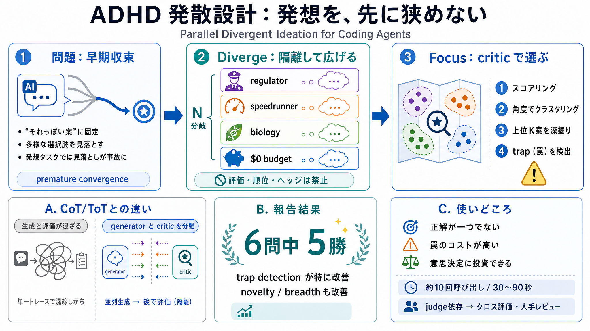

ADHD: Parallel Divergent Ideation for Coding Agents
# ADHD: Parallel Divergent Ideation for Coding Agents Tree-of-thought with cognitive-frame branching, generator–critic s…

# ADHD: Parallel Divergent Ideation for Coding Agents Tree-of-thought with cognitive-frame branching, generator–critic s…
# GitHub - UditAkhourii/adhd: ADHD — a skill for coding agents. * GitHub Copilot Write better code with AI. * GitHub…
That's the whole base of my paper - ADHD - Parallel Divergent Ideation for Coding Agents. My thesis is that if we disreg…
In this paper, we report an empirical study on the generalizability of four state-of-the-art multi-agent code generation…
In a process-orchestrated agent system, the LLM becomes a sophisticated node within a larger, choreographed workflow. Th…